A polynomial is an expression containing constants and variables connected only through basic operations of algebra.
Describe what polynomials are and their defining characteristics
Polynomials are widely used algebraic objects. They have the form of a sum of scaled powers of a variable.
Let $\mathbb{R}$ be the set of real numbers. A monomial over $\mathbb{R}$ in a single variable $x$ consists of a non-negative power of $x$ , multiplied with a nonzero constant $c \in \mathbb{R}.$ So a polynomial looks like
$cx^n$ ,
where $n \geq 0$ is an integer and $c \not = 0$ is a real number. If we want to give the polynomial a name, say $M$ , we denote that its variable is $x$ by writing $x$ between brackets:
$M(x)=cx^n$ .
The exponent $n$ is called the degree of $M(x).$ The constant $c$ is the coefficient.
$\sqrt{2}x^7$ is a monomial of degree 7 and coefficient $\sqrt{2}$ .
$7x^{\sqrt{2}}$ , $\sqrt{2}x^{-7}$ and $2x^7 - 7x^2$ are not monomials. The first and the second do not have a non-negative integer exponent and the third is a sum of two monomials.
A polynomial over $\mathbb{R}$ is a finite sum of monomials over $\mathbb{R}$ . For example
is the finite sum of the $4$ monomials: $4x^{13}, 3x^2, -\pi x$ and $1 = 1x^0.$
It is also the sum of the 6 monomials: $1/3 x^{100}, -1/3 x^{100}, 4x^{13}, 3x^2, -\pi x$ and $1$ , as will be explained in the discussion about addition and subtraction of polynomials. However, we can only write down $P(x)$ as the sum of monomials of distinct degree in exactly one way, namely the first we mentioned. These monomials are called the terms of $P(x).$ The coefficients of $P(x)$ are the coefficients corresponding to its terms.
Every monomial is also a polynomial, as it can be written as a sum with one term, itself.
A special example of a polynomial is the zero polynomial
which is a sum of $0$ monomials.
The degree of a polynomial $Q(x)$ is the highest degree of one of its terms. For example, the degree of $P(x)$ is $13$ .
The degree of the zero polynomial is defined to be $-\infty$ .
This part is for the interested reader only. Most students can skip this part, or just remember that polynomials over $\mathbb{C}$ are the same as polynomials over $\mathbb{R}$ , but with complex coefficients and that the degree of a monomial in more variables equals the sum of the exponents.
We have discussed polynomials over $\mathbb{R}$ . We shall later see that we can add, subtract and multiply these polynomials. In general, our coefficients $c$ do not need to belong to $\mathbb{R}$ , but they can belong to any set of "numbers" in which we can add, subtract and multiply. These sets are called rings. Examples of rings are the real numbers $\mathbb{R}$ , the integers $\mathbb{Z}$ and the complex numbers $\mathbb{C}$ . In this case, we talk about complex polynomials, or polynomials over $\mathbb{C}$ . The degree of a polynomial is defined in the same way as in the real case.
In particular, the polynomials over $\mathbb{R}$ form a ring, which we denote by $\mathbb{R}[x]$ . The polynomials over this ring will be polynomials in two variables $x$ and $y$ over $\mathbb{R}$ .
Here the degree in $x$ of $x^3y^5$ is $3$ , the degree in $y$ of $x^3y^5$ is $5$ and its joint degree or degree is $8$ .
Polynomials can be added or subtracted by combining like terms.
Explain how to add and subtract polynomials and what it means to do so
Polynomials are algebraic expressions that contain terms that are constructed from variables and constants. Recall the rules for adding and subtracting algebraic expressions, which state that only like terms can be combined.
Like terms are those that are either both constants or have the same variables with the same exponents. For example, $4x^3$ and $x^3$ are like terms; $21$ and $82$ are also like terms. Adding and subtracting polynomials is as simple as adding and subtracting like terms. When adding polynomials, the commutative property allows us to rearrange the terms to group like terms together.
Note that any two polynomials can be added or subtracted, regardless of the number of terms in each, or the degrees of the polynomials. The resulting polynomial will have the same degree as the polynomial with the higher degree in the problem.
You may be asked to add or subtract polynomials that have terms of different degrees. For example, one polynomial may have the term $x^2$ , while the other polynomial has no like term. If any term does not have a like term in the other polynomial, it does not need to be combined with any other term. It is simply carried down, with addition or subtraction applied appropriately. See the second example below for a demonstration of this concept.
Find the sum of $4x^2 - 5x + 1$ and $3x^2 - 8x - 9$ .
First, group like terms together:
Combine the like terms for the solution:
Subtract: $(5x^3 + x^2 + 9) - (4x^2 + 7x -3)$
Start by grouping like terms. Remember to apply subtraction to each term in the second polynomial. Note that the term $5x^3$ in the first polynomial does not have a like term; neither does $7x$ in the second polynomial. These are simply carried down.
Now combine the like terms:
Notice that the answer is a polynomial of degree 3; this is also the highest degree of a polynomial in the problem.
To multiply two polynomials together, multiply every term of one polynomial by every term of the other polynomial.
Explain how to multiply polynomials using the distributive property and describe the results of doing so
Multiplying a polynomial by a monomial is a direct application of the distributive and associative properties. Recall that the distributive property says that
for all real numbers $a,b$ and $c.$ The associative property says that
for all real numbers $a,b$ and $c.$
As we will treat variables in the same way as real numbers, the same properties hold whenever $a,b$ and/or $c$ is a variable. So for the multiplication of a monomial with a polynomial we get the following procedure:
Multiply every term of the polynomial by the monomial and then add the resulting products together.
For example,
To multiply a polynomial $P(x) = M_1(x) + M_2(x) + \ldots + M_n(x)$ with a polynomial $Q(x) = N_1(x) + N_2(x) + \ldots + N_k(x)$ , where both are written as a sum of monomials of distinct degrees, we get
and we see that this equals the sum of the products of the terms, where every term of $P(x)$ is multiplied exactly once with every term of $Q(x)$ . Notice that since the highest degree term of $P(x)$ is multiplied with the highest degree term of $Q(x)$ we have that the degree of the product equals the sum of the degrees, since
for all real numbers (and variables) $a$ and all non-negative integers $m$ and $n$ .
For convenience, we will use the commutative property of addition to write the expression so that we start with the terms containing $M_1(x)$ and end with the terms containing $M_n(x)$ .
This method is commonly called the FOIL method, where we multiply the First, Outside, Inside, and Last pairs in the expression, and then add the products of like terms together.
For example, to find the product of $(2x+3)(x-4)$ , use FOIL and then add the products together:
Since we made sure that the product of polynomials abides the same laws as if the variables were real numbers, the evaluation of a product of two polynomials in a given point will be the same as the product of the evaluations of the polynomials:
for all real numbers $x_0.$
In particular $PQ(x_0) = 0$ if and only if $P(x_0)Q(x_0)=0$ , if and only if $P(x_0) = 0$ or $Q(x_0) = 0$ . So the roots of a product of polynomials are exactly the roots of its factors, i.e. $x_0$ is a zero for $PQ(x)$ if it is a zero for $P(x)$ or for $Q(x)$ (and possibly both).
Functions are commonly used in fitting data to a trend line. Polynomial and rational functions are both relatively accurate and easy to use.
Discuss the advantages and disadvantages of using polynomial and rational functions as models
For a set of data containing two (or more) quantitative properties, statisticians use functions to denote a relationship between two or more distinct properties. When we find a function that lies reasonably close to the collected data points, we create a trend line which says how one property behaves as a function of the other ones. We call this curve fitting. Then we can use this to make predictions about the former property once we know something about the others.
For example, if you measure the height of $99$ 10-year olds, and you measure how far they can jump and how fast they can run, you might be able to predict how fast the $100th$ kid can run, just by watching them jump. Of course, this is only possible if the two quantities are related: How many uncles a kid has got has probably nothing to do with how far they can jump.
Polynomial and rational functions are easy to work with because you only need to make use of elementary operations.
Recall that a polynomial function has the following form:
where $n$ (the degree of the polynomial) is an integer greater than or equal to $0$ , $x$ and $y$ are variables, and $0\not=a_n,a_{n-1},\ldots,a_2, a_1$ and $a_0$ are constants.
Polynomial functions are very simple in form and easy to use, but they have limitations with regard to statistical modeling. They can take on only a limited number of shapes and are particularly ill-suited to modeling asymptotes. They are finite when $x$ is finite and infinite when $x$ is infinite. It is especially hard to say something about the value of $y$ when $x$ is a lot bigger (smaller) than the greatest (smallest) $x$ in the dataset.
This need not be a problem. For lots of datasets, their are no asymptotes and data is more or less bounded. (For example, there are no humans who are $-10$ or $10000$ years old.)
Polynomials have also lots of advantages:
To deal with the asymptotic problems of polynomials, we also use rational functions:
A rational function is the ratio of two polynomial functions and has the following form:
Here, n and m define the degrees of the numerator and denominator, respectively, and together, they define the degree of the polynomial. For example, if $n=2$ and $m=1$ , the function is described as a quadratic/linear rational function.
Rational functions are a little more complex in form than polynomial functions, but they have an advantage in that they can take on a much greater range of shapes and can effectively model asymptotes. They are also more accurate than polynomial functions both inside and outside the limits of collected data. However, rational functions sometimes include undesirable asymptotes that can disrupt an otherwise smooth trend line. They are also a little bit more difficult to compute, since you also need division to compute them. However, they still run fast.
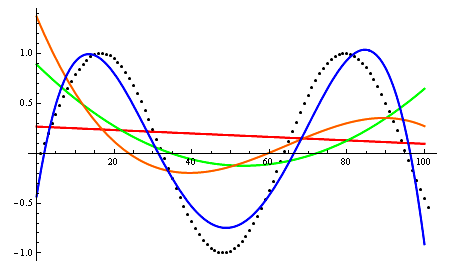Polynomial curves generated to fit points (black dots) of a sine function: The red line is a first degree polynomial; the green is a second degree; the orange is a third degree; and the blue is a fourth degree.
Polynomials and rational functions are used for approximation in many everyday devices. For example, every time we take a picture with a smartphone, our phone looks at some data points and fills in the appropriate colors in the blanks, thus saving us a lot of memory, with the help of rational functions. Every time we say something through the phone, our phone tries to reduce the background noise by approximating our sound for short periods of time, again with the help of rational functions.
A polynomial function in one real variable can be represented by a graph.
Discuss the factors that affect the graph of a polynomial
Polynomials appear in a wide variety of areas of mathematics and science. To better study and understand a polynomial, we sometimes like to draw its graph.
A typical graph of a polynomial function of degree 3 is the following:
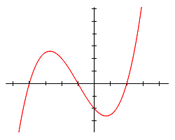Graph of a polynomial function with equation $y = \frac {x^3}{4} + \frac {3x^2}{4} - \frac {3x}{2} - 2.$
If we factorize the above function we see that $y = \frac{1}{4}(x-2)(x+1)(x+4)$ , so the zeros of the polynomial are $2, -1$ and $-4$ . This is one thing we can read from the graph. In general, we can read the number of zeros from a polynomial just by looking at how many times it meets the $x$ -axis.
As $\frac {x^3}{4}$ tends to be much larger (in absolute value) than $\frac {3x^2}{4} - \frac {3x}{2} - 2$ when $x$ tends to positive or negative infinity, we see that $y$ goes, like $\frac {x^3}{4}$ , to negative infinity when $x$ goes to negative infinity, and to positive infinity when $x$ goes to positive infinity. This is again something we can read from the graph.
In general, polynomials will show the same behavior as their highest-degree term. Functions of even degree will go to positive or negative infinity (depending on the sign of the coefficient of the highest-degree term) if $x$ goes to infinity. Functions of odd degree will go to negative or positive infinity when $x$ goes to negative infinity and vice versa, again depending on the highest-degree term coefficient.
Conversely, if we know the zeros of a polynomial, and we know how it behaves near infinity, we can already make a nice sketch of the graph. We can exactly draw the points $(z,0)$ for each root $z$ . Between two zeros (and before the smallest zero, and after the greatest zero) a function will always be either positive, or negative. We know whether it is positive or negative at infinity. Every time we cross a zero of odd multiplicity (if the number of zeros equals the degree of the polynomial, all zeros have multiplicity one and thus odd multiplicity) we change sign.
So in our example, we start with a negative sign until we reach $x = -4$ , when our graph rises above the $x$ -axis. At some point it starts to descend again, until we reach $x=-1$ and the graph goes below the $x$ -axis again till $x=2$ , where it becomes positive again.
With this procedure, we can draw a reasonable sketch of our graph, by only looking at the sign of the function and drawing a smooth line with the same sign! However, we can do better. For example, the number of times a function reaches a local minimum or maximum (i.e. a point where the graph descends and then starts to ascend again, or vice versa) is finite. In particular, it is smaller than the degree of the given polynomial. So if you draw a graph, make sure you draw no more local extremum points than you should.
Another easy point to draw is the intersection with the $y$ -axis, as this equals the function value in the point zero, which equals the constant term of the polynomial. We also call this the $y$ -intercept of the function. So if we draw our smooth line, we make sure it crosses the $y$ -axis in the same place. In general, the more function values we compute, the more points of the graph we know, and the more accurate our graph will be. Conversely, we can easily read the constant term of the polynomial by looking at its intersection with the $y$ -axis if its graph is given (and indeed, we can readily read any function value if the graph is given).
Below are some examples of graphs of functions.
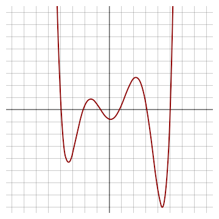A polynomial of degree 6. Its constant term is between -1 and 0. Its highest-degree coefficient is positive. It has exactly 6 zeroes and 5 local extrema.
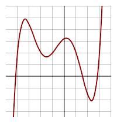A polynomial of degree 5. Its constant term is between 3 and 4. Its highest-degree coefficient is positive. It has 3 real zeros (and two complex ones). However, it has 4 local extrema.
Analysis of a polynomial reveals whether the function will increase or decrease as $x$ approaches positive and negative infinity.
Use the leading-term test to describe the end behavior of a polynomial graph
All polynomial functions of first or higher order either increase or decrease indefinitely as $x$ values grow larger and smaller. It is possible to determine the end behavior (i.e. the behavior when $x$ tends to infinity) of a polynomial function without using a graph. Consider the polynomial function:
$a_nx^n$ is called the leading term of $f(x)$ , while $a_n \not = 0$ is known as the leading coefficient. The properties of the leading term and leading coefficient indicate whether $f(x)$ increases or decreases continually as the $x$ -values approach positive and negative infinity:
Consider the polynomial
In the leading term, $a_n$ equals $\frac {1}{4}$ and $n$ equals $3$ . Because $n$ is odd and $a$ is positive, the graph declines to the left and inclines to the right. This can be seen on its graph below:
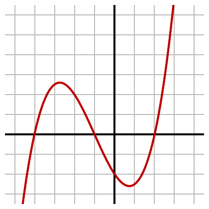Graph of a polynomial with equation $f(x) = \frac {x^3}{4} + \frac {3x^2}{4} - \frac{3x}{2} - 2$ . Because the degree is odd and the leading coefficient is positive, the function declines to the left and inclines to the right.
Another example is the function
which has $-\frac {x^4}{14}$ as its leading term and $- \frac{1}{14}$ as its leading coefficient. Thus $g(x)$ approaches negative infinity as $x$ approaches either positive or negative infinity; the graph declines both to the left and to the right as seen in the next figure:
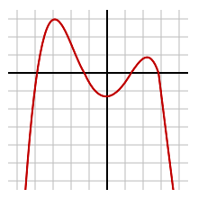Graph of $g(x) = - \frac{1}{14} (x+4)(x+1)(x-1)(x-3) + \frac{1}{2}$ . As the degree is even and the leading coefficient is negative, the function declines both to the left and to the right.
Intuitively, one can see why we need to look at the leading coefficient to see how a polynomial behaves at infinity: When $x$ is very big (in absolute value), then the highest degree term will be much bigger (in absolute value) than the other terms combined. For example $x - 1000$ differs a lot from $x$ when $x = 0$ or $1000$ , but (relatively) not when $x = 9999999999999$ or $-9999999999999999$ . Indeed, both functions can be described as "very big and positive" in the first point and "very big and negative" in the second.
In general, when we have a polynomial
and the absolute value of $x$ is bigger than $MnK$ , where $M$ is the absolute value of the largest coefficient divided by the leading coefficient, $n$ is the degree of the polynomial and $K$ is a big number, then the absolute value of $a_nx^n$ will be bigger than $nK$ times the absolute value of any other term, and bigger than $K$ times the other terms combined! So when $x$ grows very large, $f(x)$ very much resembles its leading term $a_n x^n.$ This function grows very big as $x$ grows very big.
Now $a_nx^n$ takes on the sign of $a_n$ if $x^n$ is positive, which happens if $x$ is positive or if $n$ is even, and the opposite sign of $a_n$ if $x^n$ is negative, which happens if $x$ is negative and $n$ is odd. (Notice that we do not care about $x = 0$ since we are only interested in very large $x.$ )
Thus, $a_nx^n$ (and thus $f(x)$ , in the neighborhood of infinity) goes up (as $x$ approaches infinity) if $a^n$ is positive and down if $a_n$ is negative. Except when $x$ is negative and $n$ is odd; then the opposite is true.
Factoring by grouping divides the terms in a polynomial into groups, which can be factored using the greatest common factor.
Describe what it means to factor a polynomial and why it is useful to do so
A polynomial consists of a sum of monomials. However, sometimes it will be more useful to write a polynomial as a product of other polynomials with smaller degree, for example to study its zeros. The process of rewriting a polynomial as a product is called factoring.
Factoring is the decomposition of an algebraic object, for example an integer or a polynomial, into a product of other objects, or factors, which when multiplied together give the original. As an example, the integer $15$ factors as $3 \cdot 5$ , and the polynomial $x^3 + 2x^2$ factors as $x^2(x+2)$ . In all cases, a product of simpler objects than the original (smaller integers, or polynomials of smaller degree) is obtained.
For example:
is a factorization of a polynomial of degree $3$ into $3$ polynomials of degree $1$ .
The aim of factoring is to reduce objects to "basic building blocks", such as integers to prime numbers, or polynomials to irreducible polynomials. (These are polynomials which cannot be factored non-trivially.)
The inverse procedure of polynomial factorization is expansion, which is just explicitly writing out the multiplication of two or more factors, for example:
One way to factor polynomials is factoring by grouping. This is done by grouping the terms in the polynomial into two or more groups in such a way that each group can be factored separately. The results of these factorizations can sometimes be combined to make an even more simplified expression. For example, to factor the polynomial $4x^2+20x+3yx+15y$ , we can factor the terms with $y$ and those without $y$ separately:
As both terms in the left expression are divisible by $4x$ and both terms in the right expression are divisible by $3y$ we can again rewrite this as:
Both groups share the same factor $(x+5)$ , so the polynomial is factored as:
Sometimes, when factoring a polynomial in two or more variables, this last step is not possible and we have to content ourselves with having two or more terms which are each factorized themselves:
Polynomial long division functions similarly to long division, and if the division leaves no remainder, then the divisor is called a factor.
Use polynomial division to find additional factors of a polynomial
Suppose you are given positive integers $D$ and $d$ . We want to find integers $q$ and $r$ such that $0 \leq r < d$ and $D = qd+r.$ This we can do with long division, which we all learned to do in elementary school.
To refresh our memory, we divide $\frac{745}{13}$ by hand. We write the numbers down like this:
As $7$ is smaller than $13$ , we group the first two digits together and we see that: $5\cdot 13 = 65 \leq 74 < 78 = 6\cdot 13 $
So we write down a five as our first digit of $q$ and subtract $65$ from $74:$
We now group the remaining two digits and see that $7 \cdot 13 = 91 \leq 95 < 104 = 8 \cdot 13$
So the second digit of $q$ is $8$ and we subtract $91$ from $95$ to obtain $4$ . As $4$ is smaller than $13$ , we cannot repeat this procedure and we have found that $q = 58, r = 4.$ So $745$ contains $58$ copies of $13$ , and another copy of $4.$
The beauty of long division is that the algorithm can be used not for integers only, but also for polynomials.
Here we think about a larger polynomial as one with a higher degree. So given two polynomials $D(x)$ (the dividend) and $d(x)$ (the divisor), we are looking for two polynomials $q(x)$ (the quotient) and $r(x)$ (the $remainder)$ such that $D(x) = d(x)q(x) + r(x)$ and the degree of $r(x)$ is strictly smaller than the degree of $d(x).$
Conceptually, we want to see how many copies of $d(x)$ are contained in $D(x)$ (this is the quotient) and then how far $D(x)$ is away from being a multiple of $d(x)$ (this is the remainder).
For example, suppose we want to divide $6x^3-8x^2+4x-2$ by $2x-4$ :
We look at the highest degree terms and we see that $6x^3=2x\cdot3x^2$ . So we write down a $3x^2$ , multiply the divisor with this result and subtract this from the dividend:
Again looking at the highest degree terms, we see that $4x^2 = 2x\cdot2x$ , so we write down $2x$ as the second term in the quotient and proceed as before:
As $12x = 2x\cdot 6$ , our next term will be $6:$
As multiplying any polynomial with the divisor $2x-4$ gets us a polynomial of degree greater than $0$ , we cannot divide any further. We see that the quotient $q(x)$$3x^2+2x+6$ and the remainder $r(x)$ is $22$ , so
$6x^3-8x^2+4x-2 = (2x-4)(3x^2+2x+6) + 22$ .
If the remainder $r(x)$ equals $0$ , we also say that there is no remainder and do not explicitly write out the $0$ . This means that $D(x)=d(x)q(x)$ : the dividend is a multiple of the divisor, or the divisor is said to $$divide the dividend. We say that the divisor is a factor of the dividend. (Of course, the quotient will also be a factor.)
If you have enough time to check your results, it is always wise to do so. The best way to do this is to explicitly work out the equation
$D(x) = d(x)q(x)+r(x)$ .
Another way is to check this equation for only one value of $x$ .
Synthetic division is a technique for dividing a polynomial and finding the quotient and remainder.
Use synthetic division to divide a polynomial
In algebra, the polynomial remainder theorem or little Bézout's theorem, is an application of polynomial long division. It states that the remainder of a polynomial $f(x)$ divided by a linear divisor $(x-a)$ is equal to $f(a)$ .
For example, take the polynomial:
$f(x)=x^3-12x^2-42$
Then divide it by $x-3$ .
This gives the quotient $x^2-9x-27$ and the remainder $-123$ . Therefore, $f(3)=-123$ . We can check this by plugging $3$ into the equation, which yields:
In particular, $f(a)=0$ if and only if $(x-a)$ divides $f(x).$
To use the remainder theorem, one must first perform division, which is a bit of work. A shorthand way to perform long division is synthetic division. It uses less writing and fewer calculations. It also takes significantly less space than long division. Most importantly, the subtractions in long division are converted to additions by switching the signs at the very beginning, preventing sign errors. Synthetic division only works for polynomials divided by linear expressions with a leading coefficient equal to $1.$
Let's use synthetic division to solve the example above $f(x)=x^3-12x^2-42 $ divided by $x-3$ :
We start by writing down the coefficients from the dividend and the negative second coefficient of the divisor. Note that we explicitly write out all zero terms!
Bring down the first coefficient and multiply it by the divisor. Place the resulting $3$ under the $-12$ .
Then add the next column of coefficients, get the result and multiply that by the divisor to find the third coefficient $-27$ :
So the quotient must be the second degree polynomial $x^2 - 9x - 27$ . Now we can also see what the remainder is, just by repeating the procedure:
In particular, the number we write on the left is a root of the upper polynomial if and only if the last number we obtain is $0$ .
A special case of this is when the left number is $1$ : then the last number equals the sum of all coefficients! Thus $1$ is a zero of a polynomial if and only if its coefficients add to $0.$
When we divide by $ax-b$ and $a \not = 1$ , we can divide by $(x-b/a)$ and then divide the result by $a$ . This way we can still use synthetic division.
Finding factors of polynomials is important, since it is always best to work with the simplest version of a polynomial.
Practice the different methods for finding the factors of a polynomial
When multiplying, things are put together. When factoring, things are pulled apart. Factoring is a critical skill in simplifying functions and solving equations.
There are four basic types of factoring. In each case, it is beneficial to start by showing a multiplication problem, and then show how to use factoring to reverse the results of that multiplication.
This type of factoring is based on the distributive property, which states:
When factoring, this property is done in reverse. Therefore, starting with an expression such as the one above, it can be noted that every one of those terms is divisible by $2$ . Also, every one of those terms is divisible by $x$ . Henc, one can "factor out," or "pull out," $2x$ .
We now divide each term with this common factor to fill in the blanks. For instance, $8x^3$ divided by $2x$ equals $4x^2$ . Doing this for each term, we obtain:
For many types of problems, it is easier to work with this factored form.
As another example, consider $6x+3$ . The common factor is $3$ . When factoring $3$ from $6x$ , $2x$ is left. When factoring $3$ out of $3$ , $1$ remains:
$6x+3=3(2x+1)$ .
There are two key points to understand about this kind of factoring:
The second type of factoring is based on the "squaring" formulae:
For instance, if the problem is $x^2 + 6x + 9$ , then one may recognize the signature of the first formula: the middle term is three doubled, and the last term is three squared. Thus, this simplifies to $(x+3)^2$ . Other examples are
If the middle term is negative, then the second formula is:
This type of factoring only works in this specific case: the middle number is something doubled, and the last number is that same value squared. Furthermore, although the middle term can be either positive or negative, the last term cannot be negative. This is because if a negative is squared, the answer is positive.
To use this method of factoring, one must keep their eyes open to recognize the pattern. The best way to do this is practice.
The third type of factoring is based on the third of the basic formulae:
This formula can be run in reverse whenever subtracting two perfect squares. For instance, if there is $x^2-25$ , it can be seen that both $x^2$ and $25$ are perfect squares. Therefore it factors as $(x+5)(x-5)$ . Other examples include:
Note that, in the last example, the first step is done by pulling out a factor $2$ , and there are two perfect squares left. This follows the rule: always begin by pulling out common factors before trying anything else.
Note also that when we are working with real numbers, all positive numbers are squares. So
$x^2 - 3 = (x+\sqrt{3})(x-\sqrt{3})$ .
It often happens that we can use this method twice (or more):
It is important to note that the sum of two squares cannot be factored.
As in the case of factoring a perfect square, to use this method one has to keep their eyes open to notice the pattern.
This is the hardest way to factor a polynomial, but the one we need to use when the other ones do not suffice.
In general, we can multiply any number of polynomials with any number of terms using the distributive property.
To see how to use this for factoring, we again try to notice a pattern. For example, we have:
Since $3+7 = 10$ and $3 \cdot 7 = 21$ .
In general:
Or, of course:
which we can factor again by the previous method if $-c$ or $d$ are positive.
Especially when we think $a$ and $b$ are integers, the best tactic to do this is checking for positive and negative factors of the last term, since there are only a limited number of them.
The fundamental theorem states that every non-constant, single-variable polynomial with complex coefficients has at least one complex root.
Discuss the fundamental theorem of algebra
Some polynomials with real coefficients, like $x^2 + 1$ , have no real zeros. As it turns out, every polynomial with a complex coefficient has a complex zero. Every polynomial of odd degree with real coefficients has a real zero.
The fundamental theorem of algebra says that every non-constant polynomial in a single variable $z$ , so any polynomial of the form
where $n > 0$ and $c_n \not = 0$ , has at least one complex root.
There are lots of proofs of the fundamental theorem of algebra. However, despite its name, no purely algebraic proof exists, since every proof makes use of the fact that $\mathbb{C}$ is complete.
In particular, since every real number is also a complex number, every polynomial with real coefficients does admit a complex root. For example, the polynomial $x^2 + 1$ has $i$ as a root.
Saying that $x_0$ is a root of a polynomial $f(x)$ is the same as saying that $(x-x_0)$ divides $f(x).$ We say that a root $x_0$ has multiplicity $m$ if $(x-x_0)^m$ divides $f(x)$ but $(x-x_0)^{m+1}$ does not. For example, the polynomial
admits one complex root of multiplicity $4$ , namely $x_0 = 0$ , one complex root of multiplicity $3$ , namely $x_1 = i$ , and one complex root of multiplicity $1$ , namely $x_2 = - \pi$ . The sum of the multiplicity of the roots equals the degree of the polynomial, $8$ . For non-zero complex polynomials, this turns out to be true in general and follows directly from the fundamental theorem of algebra.
Indeed, a polynomial of degree $0$ takes on the form $c_0$ , where $c_0 \not = 0$ , and thus has no zeros.
For a general polynomial $f(x)$ of degree $n$ , the fundamental theorem of algebra says that we can find one root $x_0$ of $f(x)$ . Thus we can factor $f(x)$ as
where $f_1(x)$ is a non-zero polynomial of degree $n-1.$ So if the multiplicities of the roots of $f_1(x)$ add to $n-1$ , the multiplicity of the roots of $f$ add to $n$ .
So since the property is true for all polynomials of degree $0$ , it is also true for all polynomials of degree $1$ . And since it is true for all polynomials of degree $1$ , it is also true for all polynomials of degree $2$ . In general, for any $n \in \mathbb{N}$ , we will be able to conclude that the property is true for all polynomials of degree $n.$ Thus the property is true for all polynomials.
Conversely, if the multiplicities of the roots of a polynomial add to its degree, and if its degree is at least $1$ (i.e. it is not constant), then it follows that it has at least one zero.
So an alternative statement of the fundamental theorem of algebra is:
The multiplicities of the complex roots of a nonzero polynomial with complex coefficients add to the degree of said polynomial.
The complex conjugate root theorem says that if a complex number $a+bi$ is a zero of a polynomial with real coefficients, then its complex conjugate $a-bi$ is also a zero of this polynomial.
Now suppose our real polynomial admits a root $a+bi$ with $b \not = 0$ . By dividing with the real polynomial$(x-(a+bi))(x-(a-bi))=(x-a)^2 +b^2$ , we obtain another real polynomial, for which the complex conjugate root theorem again applies. In this way, we see that the total multiplicity of non-real complex roots of a polynomial with real coefficients must always be even.
This last remark, together with the alternative statement of the fundamental theorem of algebra, tells us that the parity of the real roots (counted with multiplicity) of a polynomial with real coefficients must be the same as the parity of the degree of said polynomial. Therefore, a polynomial of even degree admits an even number of real roots, and a polynomial of odd degree admits an odd number of real roots (counted with multiplicity). In particular, every polynomial of odd degree with real coefficients admits at least one real root.$$
To construct a polynomial from given zeros, set $x$ equal to each zero, move everything to one side, then multiply each resulting equation.
Use the zeros of a polynomial to write a polynomial with those zeros
One type of problem is to generate a polynomial from given zeros. This can be solved using the property that if $x_0$ is a zero of a polynomial, then $(x-x_0)$ is a divisor of this polynomial and vice versa.
We assume that the problem statement is as follows: We are given some zeros. If it is not specified what the multiplicity of the zeros are, we want the zeros to have multiplicity one. There are no other zeros, i.e. if a number is not mentioned in the problem statement, it cannot be a zero of the polynomial we find.
Remember that the degree of a polynomial, the highest exponent, dictates the maximum number of roots it can have. Thus, the degree of a polynomial with a given number of roots is equal to or greater than the number of roots that are given. If we already count multiplicity in this number, than the degree equals the number of roots. For example, if we are given two zeros, then a polynomial of second degree needs to be constructed.
If $x_1, x_2, \ldots x_n$ are the zeros of $f(x)$ and the leading coefficient of $f(x)$ is $1$ , then $f(x)$ factorizes as
This already gives us the solution of our problem: an answer to our question is just the product of all factors $(x-x_i)$ , where the $x_i$ are the given zeros! However, we see that this polynomial is not unique:
For any nonzero constant $a$ , we have that $(af)(x)=af(x)$ factorizes as
Thus if we find a solution $g(x)$ for our problem, we have actually found infinitely many solutions $cg(x)$ , one for every non-zero number $c$ .
Thus for given zeros $x_1, x_2, \ldots, x_n$ we find infinitely many solutions
For example, if given $a$ and $b$ as zeros, then the resulting initial terms would be a constant $c$ times the two factors that give zeros at the appropriate place:
Multiplied out, this gives:
Given zeros $0$ , $1$ , and $2$ , our general solution is of the form
In the picture below, the blue graph represents the solution for $c$ equal to $1$ . The red graph represents the solution for $c$ equal to $-1/2$ .
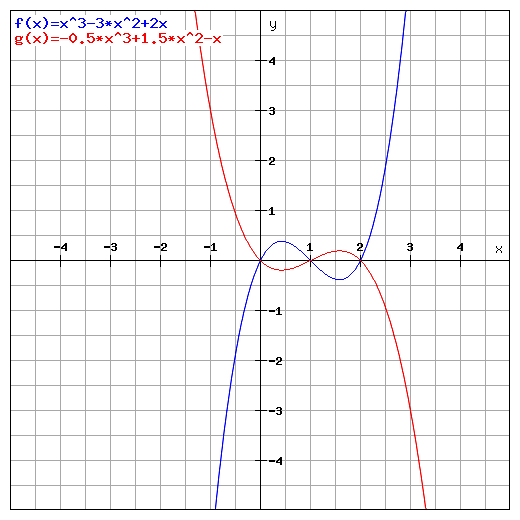Two polynomials with the same zeros: Both $f(x)$ and $g(x)$ have zeros $0, 1$ and $2$ . They are equal up to a constant. Changing the value and sign of the constant does not change the zeroes, since zero multiplied by any constant is still zero. The red graph decreases from infinity, has a local minimum, increases to a local maximum, then decreases to negative infinity. The blue graph increases from negative infinity, reaches a local maximum, decreases to a local minimum, then increases to infinity.
The factored form of a polynomial reveals its zeros, which are defined as points where the function touches the $x$ -axis.
Use the factored form of a polynomial to find its zeros
The factored form of a polynomial can reveal where the function crosses the $x$ -axis. An $x$ -value at which this occurs is called a "zero" or "root".
Consider the factored function:
Each value $a_1,a_2$ , and so on is a zero.
A polynomial function may have many, one, or no zeros. All polynomial functions of positive, odd order have at least one zero (this follows from the fundamental theorem of algebra), while polynomial functions of positive, even order may not have a zero (for example $x^4+1$ has no real zero, although it does have complex ones).
Regardless of odd or even, any polynomial of positive order can have a maximum number of zeros equal to its order. For example, a cubic function can have as many as three zeros, but no more. This is known as the fundamental theorem of algebra.
Consider the function
This can be rewritten in factored form:
Replacing $x$ with a value that will make either $(x+3),(x+1)$ or $(x-2)$ zero will result in $f(x)$ being equal to zero. Thus, the zeros for $f(x)$ are at $x=-3,x=-1$ and $x=2.$ This can also be shown graphically:
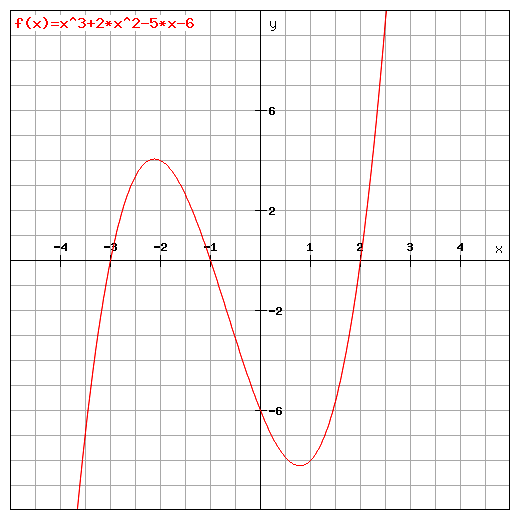Graph of the cubic function $f(x) = x^3 + 2x^2 - 5x - 6 = (x+3)(x+1)(x-2).$ We see that its roots equal the negative second coefficients of its first degree factors. A cubic polynomial that increases to a local maximum, decreases to a local minimum, then increases to infinity.
In general, we know from the remainder theorem that $a$ is a zero of $f(x)$ if and only if $x-a$ divides $f(x).$ Thus if we can factor $f(x)$ in polynomials of as small a degree as possible, we know its zeros by looking at all linear terms in the factorization. This is why factorization is so important: to be able to recognize the zeros of a polynomial quickly.
It follows from the fundamental theorem of algebra and a fact called the complex conjugate root theorem, that every polynomial with real coefficients can be factorized into linear polynomials and quadratic polynomials without real roots. Thus if you have found such a factorization of a given function, you can be completely sure what the zeros of that function are.
Each solution to a polynomial, expressed as $x= \frac {p}{q}$ , must satisfy that $p$ and $q$ are integer factors of $a_0$ and $a_n$ , respectively.
Use the Rational Zeros Theorem to find all possible rational roots of a polynomial
One way to find zeros of a polynomial is trial and error. A more efficient way is through the use of the Rational Zero Theorem.
In algebra, the Rational Zero Theorem, or Rational Root Theorem, or Rational Root Test, states a constraint on rational solutions (also known as zeros, or roots) of the polynomial equation
With integer coefficients $a_n,a_{n-1},\ldots,a_0.$
If $a_0$ and $a_n$ are nonzero, then each rational solution $x= \frac {p}{q}$ , where $p$ and $q$ are coprime integers (i.e. their greatest common divisor is $1$ ), satisfies:
So $a_0$ must be a multiple of $p$ , and $a_n $ must be a multiple of $q$ .
Since any integer has only a finite number of divisors, the rational root theorem provides us with a finite number of candidates for rational roots. When given a polynomial with integer coefficients, we can plug in all of these candidates and see whether they are a zero of the given polynomial. Once we have found all the rational zeros (and counted their multiplicity, for example, by dividing using long division), we know the number of irrational and complex roots.
Since every polynomial with rational coefficients can be multiplied with an integer to become a polynomial with integer coefficients and the same zeros, the Rational Root Test can also be applied for polynomials with rational coefficients.
For example, every rational solution of the cubic equation
must be among the numbers symbolically indicated by:
The cubic function $3x^3-5x^2+5x-2$ has one real root between $0$ and $1$ . We can use the Rational Root Test to see whether this root is rational.
i.e. its numerator must divide $2$ and its denominator must divide $3$ . This gives the list of possible answers
These root candidates can be tested, either by plugging them in directly, or by dividing and checking to see whether there is any remainder, for example using long division. The advantage of this is that once we have found a root, we immediately have found the smaller degree polynomial of which we again wish to find the roots and the rational root theorem will provide us with even fewer candidates for this root. Moreover, once we have established a root, we must use division anyway to check whether it is a multiple root.
The disadvantage is that we have to use long division more often. When there are a lot of zero candidates for a small degree polynomial, we may just want to plug in candidates and only use division when we have found a root.
In our example, we can plug in $x_0=1$ to see that it is not a root. In fact, the left hand value is equal to $1$ .
Now we use a little trick: since the constant term of $(x-x_0)^k$ equals $x_0^k$ for all positive integers $k$ , we can substitute $x$ by $t+x_0$ to find a polynomial with the same leading coefficient as our original polynomial and a constant term equal to the value of the polynomial at $x_0$ . In this case we substitute $x$ with $t+1$ and obtain a polynomial in $t$ with leading coefficient $3$ and constant term $1$ . Thus the candidates for zeros in this polynomial in $t$ are
Thus the candidates for roots of the polynomial in $x$ must be one greater than one of these candidates:
Root candidates that do not occur on both lists are ruled out. The list of rational root candidates has thus shrunk to just $x=2$ and $x=2/3$ . After checking for these candidates, we see that the only rational root (with multiplicity $1)$ is $2/3$ , which can also be seen in the graph above.
The rule of signs gives an upper bound number of positive or negative roots of a polynomial.
Use the rule of signs to find out the maximum number of positive and negative roots a polynomial has
The rule of signs, first described by René Descartes in his work La Géométrie, is a technique for determining the number of positive or negative real roots of a polynomial.
The rule gives us an upper bound number of positive or negative roots of a polynomial. However, it does not tell the exact number of positive or negative roots.
In order to find the number of positive roots in a polynomial with only one variable, we must first arrange the polynomial by descending variable exponent. For example, $-x^2 + x^3 + x$ would be written $x^3 - x^2 + x$ .
Then, we must count the number of sign differences between consecutive nonzero coefficients. This number, or any number less than it by a multiple of 2, could be the number of positive roots. In the example $x^3 - x^2 + x$ , there are two sign changes, after the first and second terms. Thus, there are either two or zero positive roots for this polynomial.
It is important to note that for polynomials with multiple roots of the same value, each of these roots is counted separately.
Finding the negative roots is similar to finding the positive roots. The difference is that you must start by finding the coefficients of odd power (for example, $x^3$ or $x^5$ , but not $x^2$ or $x^4$ ). Once you have located them, multiply each by $-1$ . Then the procedure is the same; count the number of sign changes between consecutive nonzero coefficients. This number, or any number less than it by a multiple of 2, could be your number of negative roots. Again it is important to note that multiple roots of the same value should be counted separately.
This can also be done by taking the function, $f(x)$ , and substituting the $x$ for $-x$ , so that we have the function $f(-x)$ . The reason we only bother to change the sign of the odd power coefficients is because if we substitute in $-x$ in an even power, it will just become a positive again.
For example: $(-x)^3 = (-x)(-x)(-x) = -x^3$
but $(-x)^2 = (-x)(-x) = x^2$
We can see that the negative signs cancel out for any even power. By only multiplying the odd powered coefficients by $-1$ , we are essentially saving ourselves a step.
Consider the polynomial:
This function has one sign change between the second and third terms. Therefore it has exactly one positive root. Don't forget that the first term has a sign, which, in this case, is positive.
Next, we move on to finding the negative roots. Change the exponents of the odd-powered coefficients, remembering to change the sign of the first term. Once you have done this, you have obtained the second polynomial and are ready to find the number of negative roots. This second polynomial is shown below:
This polynomial has two sign changes, after the first and third terms. Therefore, we know that it has at most two negative roots. We know that the number of roots of either sign is the number of sign changes, or a multiple of two less than that. So this polynomial has either $2$ or $0$ negative roots. We can validate this algebraically, as shown below.
First, factor the polynomial:
$f(x)=(x+1)(x+1)(x-1)$ .
This simplifies to:
$f(x)=(x+1)^2(x-1)$ .
Therefore, the roots are $-1$ , $-1$ and $1$ .
A polynomial of $n^{\text{th}}$ degree has exactly $n$ roots. The minimum number of complex roots is equal to:
where $n$ is the total number of roots in a polynomial, $p$ is the maximum number of positive roots, and $q$ is the maximum number of negative roots.
Consider the polynomial:
To find the positive roots we count the sign changes. For this example, we will assume that $b>0$ . Since there are no sign changes, there are no positive roots $(p=0)$ . Now we look for negative roots. Since there are no odd powered coefficients, there are no changes to be made before looking for sign changes; therefore, there are no negative roots $(q = 0)$ . Now we apply the complex root equation: $n - (p+ q) = 2 - (0 + 0) = 2$ . There are 2 complex roots.
A rational function is one such that $f(x) = \frac{P(x)}{Q(x)}$ , where $Q(x) \neq 0$ ; the domain of a rational function can be calculated.
Describe rational functions, including their domains
A rational function is any function which can be written as the ratio of two polynomial functions. Neither the coefficients of the polynomials, nor the values taken by the function, are necessarily rational numbers.
Any function of one variable, $x$ , is called a rational function if, and only if, it can be written in the form:
where $P$ and $Q$ are polynomial functions of $x$ and $Q(x) \neq 0$ .
Note that every polynomial function is a rational function with $Q(x) = 1$ . A function that cannot be written in the form of a polynomial, such as $f(x) = \sin(x)$ , is not a rational function. However, the adjective "irrational" is not generally used for functions.
A constant function such as $f(x) = \pi$ is a rational function since constants are polynomials. Note that the function itself is rational, even though the value of $f(x)$ is irrational for all $x$ .
The domain of a rational function $f(x) = \frac{P(x)}{Q(x)}$ is the set of all values of $x$ for which the denominator $Q(x)$ is not zero.
For a simple example, consider the rational function $y = \frac {1}{x}$ . The domain is comprised of all values of $x \neq 0$ .
Domain restrictions can be calculated by finding singularities, which are the $x$ -values for which the denominator $Q(x)$ is zero. The rational function is not defined for such $x$ -values, and these values are excluded from the domain set of the function.
Factorizing the numerator and denominator of rational function helps to identify singularities of algebraic rational functions. Singularity occurs when the denominator of a rational function equals $0$ , whether or not the linear factor in the denominator cancels out with a linear factor in the numerator.
Consider the rational function
$f(x) = \dfrac{(x^2 - 3x -2)}{(x^2 - 4)}$
The domain of this function includes all values of $x$ , except where $x^2 - 4 = 0$ .
We can factor the denominator to find the singularities of the function:
Setting each linear factor equal to zero, we have $x+2 = 0$ and $x-2 = 0$ . Solving each of these yields solutions $x = -2$ and $x = 2$ ; thus, the domain includes all $x$ not equal to $2$ or $-2$ . This can be seen in the graph below.
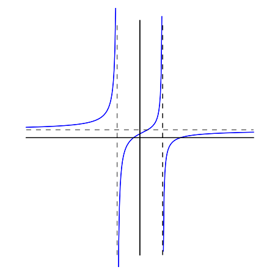Graph of a rational function with equation $\frac{(x^2 - 3x -2)}{(x^2 - 4)}$ . The domain of this function is all values of $x$ except $+2$ or $-2$ .
Note that there are vertical asymptotes at $x$ -values of $2$ and $-2$ . This means that, although the function approaches these points, it is not defined at them.
Consider the rational function
$f(x)= \dfrac{(x + 3)}{(x^2 + 2)}$
The domain of this function is all values of $x$ except those where $x^2 + 2 = 0$ . However, for $x^2 + 2=0$ , $x^2$ would need to equal $-2$ . Since this condition cannot be satisfied by a real number, the domain of the function is all real numbers.
A rational function can have at most one horizontal or oblique asymptote, and many possible vertical asymptotes; these can be calculated.
Determine when the asymptote of a rational function will be horizontal, oblique, or vertical
In analytic geometry, an asymptote of a curve is a line such that the distance between the curve and the line approaches zero as they tend to infinity.
There are three kinds of asymptotes: horizontal, vertical and oblique. Horizontal asymptotes of curves are horizontal lines that the graph of the function approaches as $x$ tends to $+ \infty$ or $- \infty$ . Horizontal asymptotes are parallel to the $x$ -axis.
Vertical asymptotes are vertical lines near which the function grows without bound. They are parallel to the $y$ -axis.
An asymptote that is neither horizontal or vertical is an oblique (or slant) asymptote. These are diagonal lines so that the difference between the curve and the line approaches $0$ as $x$ tends to $+ \infty$ or $- \infty$ .
Each type of asymptote is shown in the graph below.
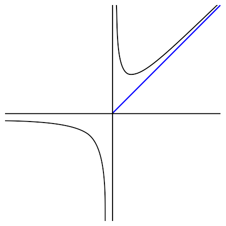The graph of a function with a horizontal ($y=0$ ), vertical ($x=0$ ), and oblique asymptote (blue line).
Consider the graph of the equation $f(x) = \frac {1}{x}$ , shown below. The coordinates of the points on the curve are of the form $(x, \frac {1}{x})$ where $x$ is a number other than 0.
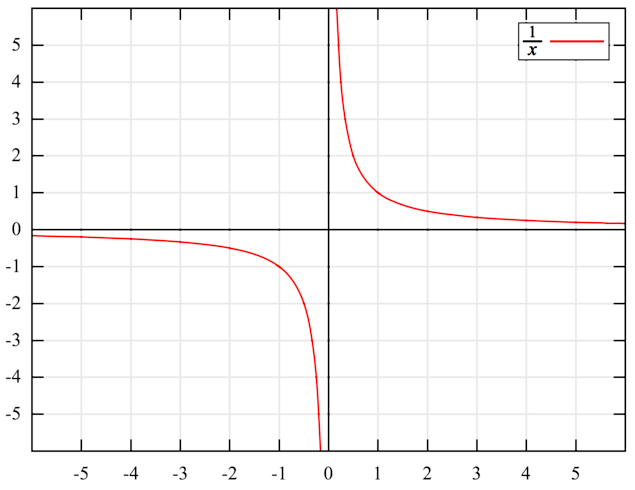Both the $x$ -axis and $y$ -axis are asymptotes.
Notice that as the positive values of $x$ become larger and larger, the corresponding values of $y$ become infinitesimally small. However, no matter how large $x$ becomes, $\frac {1}{x}$ is never $0$ , so the curve never actually touches the $x$ -axis. The $x$ -axis is a horizontal asymptote of the curve.
Similarly, as the positive values of $x$ become smaller and smaller, the corresponding values of $y$ become larger and larger. So the curve extends farther and farther upward as it comes closer and closer to the $y$ -axis. The $y$ -axis is a vertical asymptote of the curve.
A rational function has at most one horizontal or oblique asymptote, and possibly many vertical asymptotes.
Vertical asymptotes occur only when the denominator is zero. In other words, vertical asymptotes occur at singularities, or points at which the rational function is not defined. Vertical asymptotes only occur at singularities when the associated linear factor in the denominator remains after cancellation.
For example, consider the function:
$f(x) = \dfrac{(x-1)(x+2)}{(x-1)(x+1)}$
We can identify from the linear factors in the denominator that two singularities exist, at $x=1$ and $x = -1$ . However, the linear factor $(x-1)$ cancels with a factor in the numerator. Thus, the only vertical asymptote for this function is at $x=-1$ .
The degree of the numerator and degree of the denominator determine whether or not there are any horizontal or oblique asymptotes.
Existence of horizontal asymptote depends on the degree of polynomial in the numerator ($n$ ) and degree of polynomial in the denominator ($m$ ). There are three possible cases:
When the numerator of a rational function has degree exactly one greater than the denominator, the function has an oblique (slant) asymptote. The asymptote is the polynomial term after dividing the numerator and denominator, and is a linear expression.
Find any vertical asymptotes of
$f(x) = \dfrac{(x-1)(x+2)}{(x-1)^2(x+1)}$ .
Notice that, based on the linear factors in the denominator, singularities exists at $x=1$ and $x=-1$ . Also notice that one linear factor $(x-1)$ cancels with the numerator. However, one linear factor $(x-1)$ remains in the denominator because it is squared. Therefore, a vertical asymptote exists at $x=1$ . The linear factor $(x + 1)$ also does not cancel out; thus, a vertical asymptote also exists at $x = -1$ .
Find any horizontal or oblique asymptote of
$f(x) = \dfrac{2x^2 + x + 1}{x^2 + 16}$ .
Because the polynomials in the numerator and denominator have the same degree ($2$ ), we can identify that there is one horizontal asymptote and no oblique asymptote.
The coefficient of the highest power term is $2$ in the numerator and $1$ in the denominator. Hence, horizontal asymptote is given by:
The $x$ -intercepts of rational functions are found by setting the polynomial in the numerator equal to $0$ and solving for $x$ .
Use the numerator of a rational function to solve for its zeros
Recall that a rational function is defined as the ratio of two real polynomials with the condition that the polynomial in the denominator is not a zero polynomial.
$f(x) = \dfrac{P(x)}{Q(x)}$ , where $Q(x) \neq 0$
An example of a rational function is:
Rational functions can be graphed on the coordinate plane. We can use algebraic methods to calculate their $x$ -intercepts (also known as zeros or roots), which are points where the graph intersects the $x$ -axis. Rational functions can have zero, one, or multiple $x$ -intercepts.
For any function, the $x$ -intercepts are $x$ -values for which the function has a value of zero: $f(x) = 0$ .
In the case of rational functions, the $x$ -intercepts exist when the numerator is equal to $0$ . For $f(x) = \frac{P(x)}{Q(x)}$ , if $P(x) = 0$ , then $f(x) = 0$ .
In order to solve rational functions for their $x$ -intercepts, set the polynomial in the numerator equal to zero, and solve for $x$ by factoring where applicable.
Find the $x$ -intercepts of this function:
$f(x) = \dfrac{x^2 - 3x + 2}{x^2 - 2x -3}$
Set the numerator of this rational function equal to zero and solve for $x$ :
Solutions for this polynomial are $x = 1$ or $x= 2$ . This means that this function has $x$ -intercepts at $1$ and $2$ .
Find the $x$ -intercepts of the function:
$f(x) = \dfrac {1}{x}$
Here, the numerator is a constant, and therefore, cannot be set equal to $0$ . Thus, this function does not have any $x$ -intercepts.
Find the roots of:
$g(x) = \dfrac{x^3 - 2x}{2x^2 - 10} $
Factoring the numerator, we have:
$\begin {align} 0&=x^3 - 2x \\&= x(x^2 - 2) \end {align}$
Given the factor $x$ , the polynomial equals $0$ when $x=0$ .
Let the second factor equal zero, and solve for $x$ :
Thus there are three roots, or $x$ -intercepts: $0$ , $-\sqrt{2}$ and $\sqrt{2}$ . These can be observed in the graph of the function below.
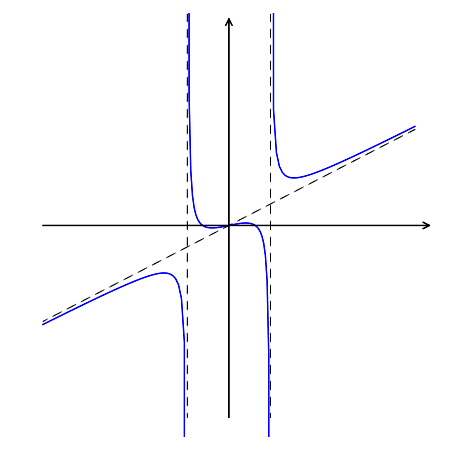$x$ -intercepts exist at $x = -\sqrt{2}, 0, \sqrt{2}$ .
A rational expression can be treated like a fraction, and can be manipulated via multiplication and division.
Practice simplifying, multiplying, and dividing rational expressions
A rational expression is a fraction involving polynomials, where the polynomial in the denominator is not zero. Just like a fraction involving numbers, a rational expression can be simplified, multiplied, and divided. The rules for performing these operations often mirror the rules for simplifying, multiplying, and dividing fractions. Performing these operations on rational expressions often involves factoring polynomial expressions out of the numerator and denominator.
Rational expressions can be simplified by factoring the numerator and denominator where possible, and canceling terms.
As a first example, consider the rational expression $\frac { 3x^3 }{ x }$ . This can be simplified by canceling out one factor of $x$ in the numerator and denominator, which gives the expression $3x^2$ .
Note that the domain of the equation $f(x) = \frac{3x^3}{x}$ does not include $x=0$ , as this would cause division by $0$ . The latter form is a simplified version of the former graphically.
Consider a more complicated example:
This expression must first be factored to provide the expression
which, after canceling the common factor of $(x+2)$ from both the numerator and denominator, gives the simplified expression
Rational expressions can be multiplied and divided in a similar manner to fractions. Recall that when two fractions are multiplied together, their numerators are multiplied to yield the numerator of their product, and their denominators are multiplied to yield the denominator of their product.
For a simple example, consider the following, where a rational expression is multiplied by a fraction of whole numbers:
Following the rule for multiplying fractions, simply multiply their respective numerators and denominators:
This can be multiplied through to yield $\displaystyle \frac {2x^2+6}{6x-9}$
Notice that we multiplied the numerators together and the denominators together, but we did not multiply the numerator by the denominator or vice-versa.
We follow the same rules to multiply two rational expressions together. The operations are slightly more complicated, as there may be a need to simplify the resulting expression.
Consider the following:
$\displaystyle \frac {x+1}{x-1} \times \frac {x+2}{x+3}$
Multiplying these two expressions, we have the product:
$\displaystyle\frac {(x+1)(x+2)}{(x-1)(x+3)}$
Multiplying out the numerator and denominator, this can be written as:
$\displaystyle \frac {x^2+3x+2}{x^2+2x-3}$
Notice that this expression cannot be simplified further.
Dividing rational expressions follows the same rules as dividing fractions. Recall the rule for dividing fractions: the dividend is multiplied by the reciprocal of the divisor. The same applies to dividing rational expressions; the first expression is multiplied by the reciprocal of the second.
Consider the following:
$\displaystyle \frac {x+1}{x-1} \div \frac {x+2}{x+3}$
Rather than divide the expressions, we multiply $\displaystyle \frac {x+1}{x-1}$ by the reciprocal of $\displaystyle \frac {x+2}{x+3}$ :
Then, multiplication is carried out in the same way as described above:
The expression cannot be simplified further.
Partial fraction decomposition is a procedure used to reduce the degree of either the numerator or the denominator of a rational function.
Practice breaking a rational function into partial fractions
In algebra, partial fraction decomposition (sometimes called partial fraction expansion) is a procedure used to reduce the degree of either the numerator or the denominator of a rational function. It involves splitting one ratio up into multiple simpler ratios.
Here's an example of one ratio being split into a sum of three simpler ratios:
In mathematical terms, partial fraction expansion is used to change a rational function in the form $\frac{f(x)}{g(x)}$ , where $f$ and $g$ are polynomials, into a function of the form $\sum_{j}\frac{f_{j}(x)}{g_{j}(x)}$ . The denominators of the terms of this summation, $g_{j}(x)$ , are polynomials that are factors of $g(x)$ , and in general are of lower degree.
The main motivation to decompose a rational function into a sum of simpler fractions is to make it easier to perform linear operations on the sum. Reducing complex mathematical problems via partial fraction decomposition allows us to focus on computing each single element of the decomposition rather than the more complex rational function.
Say we have a rational function $R(x) = \frac{f(x)}{g(x)}$ , where the degree of the numerator is less than the degree of the denominator. Assume $R(x)$ has a denominator that factors into other expressions, as $g(x)=P(x)\cdot Q(x)$ , and that there are no repeated roots.
The first step to decomposing the function $R(x)$ is to factor its denominator:
where $a_1, ... , a_p$ are the roots of $g(x)$ .
We can then write $R(x)$ as the sum of partial fractions:
where $c_1, ... , c_p$ are constants.
To complete the process, we must determine the values of these $c_i$ coefficients. To find a coefficient, multiply the denominator associated with it by the rational function $R(x)$ :
$c_i = (x - a_i)R(x)$
This will yield an expression with an $x$ -value. Substitute the associated root $a_i$ in for $x$ , and solve for the constant. The following problems provide an examples of this technique.
Apply decomposition to the rational function $f(x)=\frac{1}{x^{2}+2x-3}$
Factoring the denominator, we have:
So we have the partial fraction decomposition:
Now let's solve for the constant $c_1$ :
Substituting $x=-3$ into this equation gives $c_1 = -\frac{1}{4}$ .
Use the same process to solve for $c_2$ :
Substituting $x=1$ gives $c_2 = \frac{1}{4}$ . Substituting these coefficients into the decomposed function, we have:
$f(x)=\frac{1}{x^{2}+2x-3}=\frac{1}{4}(\frac{-1}{x+3}+\frac{1}{x-1})$ .
We have rewritten the initial rational function in terms of partial fractions. This is the most simplified form possible, so we are finished.
Apply decomposition to the rational function $g(x) = \frac{8x^2 + 3x - 21}{x^3 - 7x - 6}$
Factoring the denominator, we have:
So we have the partial fraction decomposition:
We will now solve for each constant $c_i$ :
Substituting $x=-2$ , we have:
Substituting $x=3$ , we have:
Substituting $x=-1$ , we have:
We have solved for each constant and have our partial fraction expansion:
There are some important cases to note, for which partial fraction decomposition becomes more complicated. Decomposition in each of the below cases involves steps in addition to those described above.
Polynomials can be expressed as inequalities, the solutions for which can be determined from the polynomial's zeros.
Solve for the zeros of a polynomial inequality to find its solution
Like any other function, a polynomial may be written as an inequality, giving a large range of solutions.
The best way to solve a polynomial inequality is to find its zeros. The easiest way to find the zeros of a polynomial is to express it in factored form. At these points, the polynomial's value goes from negative to positive or positive to negative. This knowledge can then be used to determine the solutions of the inequality. Much of the work involved with solving inequalities is based in observation and judgement of a particular mathematical situation, and is therefore best demonstrated with an example.
Consider the polynomial inequality:
This can be expressed as the product of three terms:
The three terms reveal zeros at $x=-3$ , $x=-1$ , and $x=2$ . We know that the lower limit of the inequality crosses the x-axis at each of these $x$ values, but now have to determine which direction (positive or negative) it takes at each crossing.
$x+3>0$ for $x>-3$
$x+1>0$ for $x>-1$
$x-2>0$ for $x>2$
Thus, as the polynomial crosses the x-axis at $x=-3$ , the term $(x+3)$ equals zero, becoming positive to the right. At the same point, $(x+1)$ and $(x-2)$ are negative. The product of a positive and two negatives is positive, so we can conclude that the polynomial becomes positive as it passes $x=-3$ .
The next zero is at $x=-1$ . From the explanation above, we know that the polynomial is positive as it approaches its next zero, but we can use the same reasoning for proof. At $x=-1$ , $(x+1)$ equals zero, becoming positive to the right. The term $(x+3)$ is positive, while $(x-2)$ is negative. The product of two positives and a negative is negative, so we can conclude that the polynomial becomes negative as it passes $x=-1$ .
The same process can be used to show that the polynomial becomes positive again at $x=2$ .
Recalling the initial inequality, we can now determine the solution of exactly where the polynomial is greater than zero. Because there is no zero to the left of $x=-3$ , we can assume that the polynomial is negative for all $x$ values $-\infty$ to $-3$ . The polynomial is positive from $x=-3$ to $x=-1$ before becoming negative once more. It becomes positive at $x=2$ , and because there are no more zeros to the right, we can assume the polynomial remains positive as $x$ approaches $\infty$ .
Thus, the solution is: $(-3,-1),(2,\infty)$
For inequalities that are not expressed relative to zero, expressions can be added or subtracted from each side to take it into the desired form.
Rational inequalities can be solved much like polynomial inequalities.
Solve for the zeros and asymptotes of a rational inequality to find its solution
As with solving polynomial inequalities, the first step to solving rational inequalities is to find the zeros. Because a rational expression consists of the ratio of two polynomials, the zeroes for both polynomials will be needed.
The zeros in the numerator are $x$ -values at which the rational inequality crosses from negative to positive or from positive to negative. The zeros in the denominator are $x$ -values are at which the rational inequality is undefined, the result of dividing by zero.
Consider the rational inequality:
This equation can be factored to give:
The numerator has zeros at $x=-3$ and $x=1$ . The denominator has zeros at $x=-2$ and $x=2$ .
As $x$ crosses rightward past $-3$ , $(x+3)$ becomes positive. At that same point, $(x-1)$ , $(x+2)$ , and $(x-2)$ are all negative. The product of a positive and three negatives is negative, so the rational expression becomes negative as it crosses $x=-3$ in the rightward direction.
The same process can be used to determine that the rational expression is positive after passing the zero at $x=-2$ , is negative after passing $x=1$ , and is positive after passing $x=2$ .
Thus we can conclude that for $x$ values on the open interval from $-\infty$ to $-3$ , the rational expression is negative. From $-3$ to $-2$ , it is positive; from $-2$ to $1$ it is negative; from $1$ to $2$ it is positive, and from $2$ to $\infty$ it is negative.
Because the inequality is written as $\geq0$ as opposed to $>0$ , we will need to evaluate the $x$ values at zeros to determine whether the function is defined.
In the case of $x=-2$ and $x=2$ , the rational function has a denominator equal to zero and becomes undefined.
In the case of $x=-3$ and $x=1$ , the rational function has a numerator equal to zero, which makes the function overall equal to zero, making it inclusive in the solution.
Thus, the full solution is:
[-3, -2), [1, 2)
{kind=link}
{kind=link}
{kind=link}
{kind=link}
{kind=link}
{kind=link}
{kind=link}
{kind=link}
{kind=link}
{kind=link}
{kind=link}
{kind=link}
{kind=link}